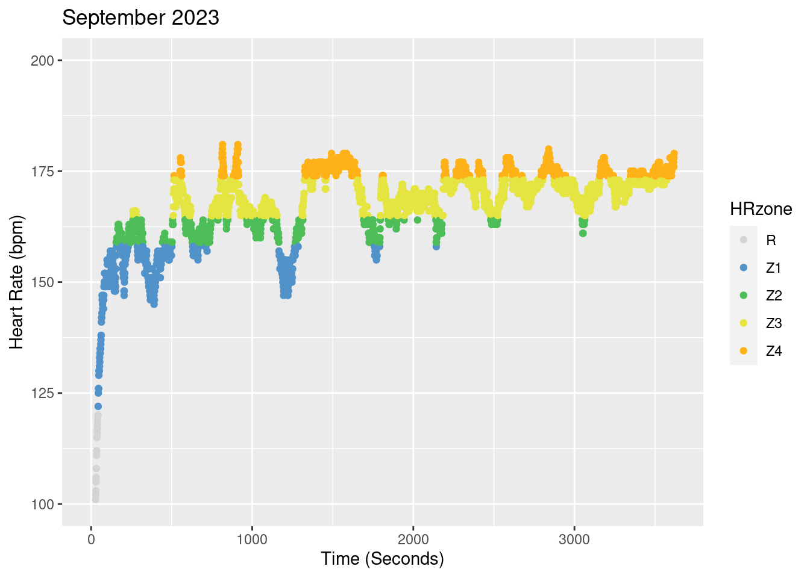
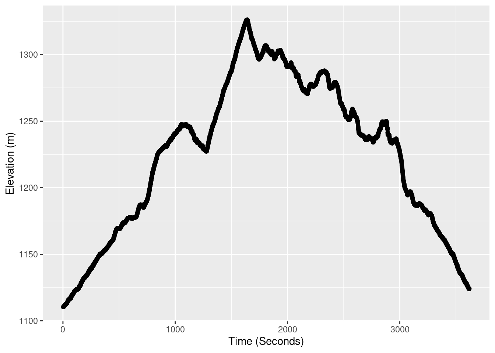
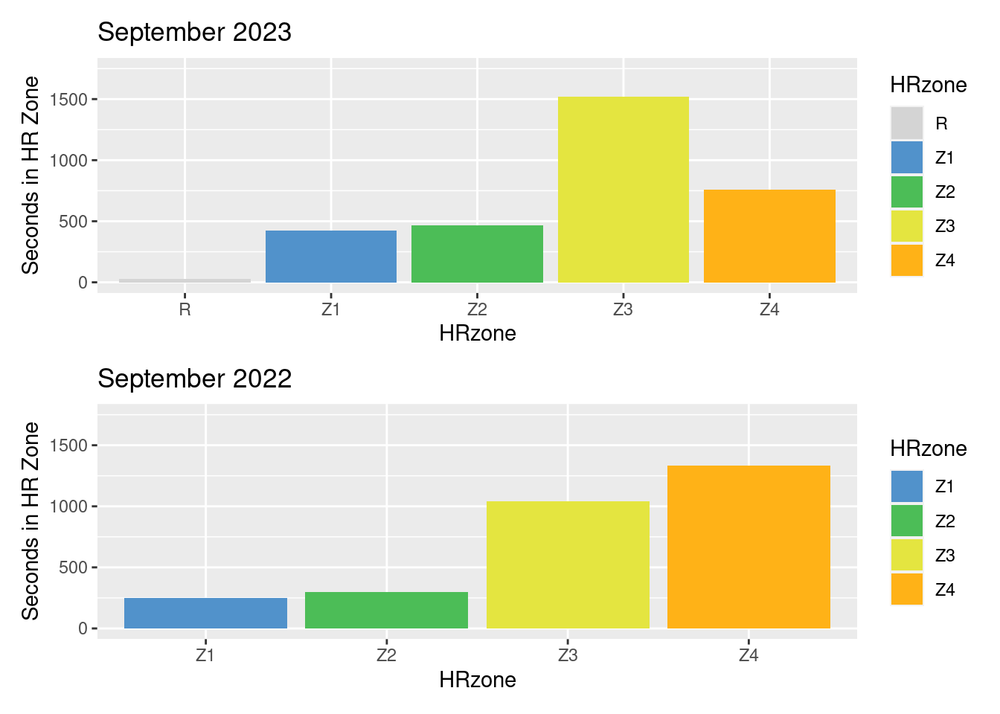

library(FITfileR)
library(tidyverse)
library(patchwork)Explorer Fitness - 4
GIS
data
exercise
quantified self
heart rate
cardio
training
adventure
explore
fitness
fire runner
explorer fitness
data journalism
Heart Rate Zone Training 4
Introduction
This post will focus on heart rate training progress over time from last year to early this season to a recent personal record on the same 13.15 km (8.17 mile) course with ~300m (984 ft) of elevation gain and loss. The two efforts are Zone 3/4 efforts. I like this course because it is technical, has some climbing, and I have done it enough that I know my splits at certain portions of the run for how well I am doing.
From my trained perspective, the heart rate zones (HRZs) break down as follows:
- < 120 - Rest - Rest, recovery, daily living
- 120-155 - Zone 1 - Nose breathing pace, all-day pace
- 156-162 - Zone 2 - Avoid if possible, too hard for Zone 1, too easy for Zone 3
- 163-173 - Zone 3 - 1.5-hour pace for me, or many shorter bursts
- 174-184 - Zone 4 - Shorter HARD efforts
- 185-195 - Zone 5 - Pushing max pace/effort
Load the relevent libraries.
For more information on each of the data import and processing steps, check out the previous post in this series.
Read in the data for a single run, process it to create heart rate zones, make a color vector for consistent color displays and do some basic plotting.
The run below is a Zone3/Zone4 heart rate zone run. This is my fastest time to date on this route at 1:00:31.
RunZone3_Sept <- readFitFile("~/DATA/data/local-route-zone3-FKT.fit") # load file
RunZone3_Sept <- records(RunZone3_Sept) %>% bind_rows() %>% arrange(timestamp)
RunZone3_Sept$HRzone <- cut(RunZone3_Sept$heart_rate,c(0,120,158,164,173,184, 200))
levels(RunZone3_Sept$HRzone) <- c("R","Z1","Z2","Z3","Z4","Z5")
RunZone3_Sept$seconds <- as.numeric(rownames(RunZone3_Sept))
cols3 <- c("R" = "#d4d4d4", "Z1" = "#5192cb", "Z2" = "#4cbd57",
"Z3" = "#e4e540", "Z4"= "#ffb217", "Z5" = "#ff5733", "NA" = "#454545")
z3_p <- ggplot(RunZone3_Sept, aes(x=seconds, y=heart_rate, col=HRzone)) +
geom_point() +
scale_x_continuous(name="Time (Seconds)") +
scale_y_continuous(limits = c(100, 200), name="Heart Rate (bpm)") +
scale_color_manual(values = cols3) +
ggtitle("September 2023")
z3_p
Now we can take a look at the elevation profile of the run. A majority of the gain is in the first 30 minutes of the run, then it is rolling hills with a net down for the rest of the run. The steepest sustained section nearly always ensures I am at the Zone 3/4 threshold.
z3_p_alt <- ggplot(RunZone3_Sept, aes(x=seconds, y=altitude)) +
geom_point() +
scale_x_continuous(name="Time (Seconds)") +
scale_y_continuous(name="Elevation (m)")
z3_p_alt
How do I know that I am getting faster? We could just look at raw times, but we can also compare heart rate zones across time on the same course. This can give a better indication of how well my training is contributing to hard efforts over time.
Load and process the comparison run from September 2022.
RunZone3_2022 <- readFitFile("~/DATA/data/local-route-2022-2nd-place.fit") # load file
RunZone3_2022 <- records(RunZone3_2022) %>% bind_rows() %>% arrange(timestamp)
RunZone3_2022$HRzone <- cut(RunZone3_2022$heart_rate,c(0,120,158,164,173,184, 200))
levels(RunZone3_2022$HRzone) <- c("R","Z1","Z2","Z3","Z4","Z5")
RunZone3_2022$seconds <- as.numeric(rownames(RunZone3_2022))A quick comparison in times for each of the runs.
max(RunZone3_Sept$seconds) # September 2023[1] 3619max(RunZone3_2022$seconds) # September 2022[1] 37183619 seconds for September 2023 and 3718 seconds for September of last year.
I have gotten faster in absolute terms, but have I gotten faster for a given heart rate? We will start to answer that question by looking at comparison plots between the runs.
To stack the plots we will use the Patchwork R package functions.
z322_p <- ggplot(RunZone3_2022, aes(x=seconds, y=heart_rate, col=HRzone)) +
geom_point() +
scale_x_continuous(name="Time (Seconds)") +
scale_y_continuous(limits = c(100, 200), name="Heart Rate (bpm)") +
scale_color_manual(values = cols3) +
ggtitle("September 2022")
stacked_plots <- z3_p / z322_p + plot_layout(ncol = 1, heights = c(10, 10))
stacked_plots
We can take a look at the accumulated number of seconds spent in each of the various heart rate zones:
z3_p2 <- ggplot(RunZone3_Sept, aes(x=HRzone, fill=HRzone)) +
geom_bar(na.rm = TRUE) +
scale_y_continuous(limits = c(0, 1750), name="Seconds in HR Zone") +
scale_fill_manual(values = cols3) +
scale_x_discrete(na.translate = FALSE) +
ggtitle("September 2023")
z322_p2 <- ggplot(RunZone3_2022, aes(x=HRzone, fill=HRzone)) +
geom_bar(na.rm = TRUE) +
scale_y_continuous(limits = c(0, 1750), name="Seconds in HR Zone") +
scale_fill_manual(values = cols3) +
scale_x_discrete(na.translate = FALSE) +
ggtitle("September 2022")
stacked_plots2 <- z3_p2 / z322_p2 + plot_layout(ncol = 1, heights = c(4, 4))
stacked_plots2
With all the accumulated cardio training I can now run a faster time for this course with a much lower average heart rate and much less time of the run spent in Zone 4. My top time is spent mostly in Zone 3. This is in comparison to June 2023 which had more time spent in Zone 4.
Overall, my fitness training is paying off!
If you are interested in other posts in this explorer series check out Explorer Fitness 1, Explorer Fitness 2, Explorer Fitness 3 and Trail Running Training.